In the admin the module, while clicking on the preferences menu, you will be able to params all settings of the newbb modules.
Options below come from folders and files which are stored in the folder /newbb/images/imagesets/
Each image set can contain files in gif or png format, you can create a folder for each language use in your web site (english, french, dutch..)
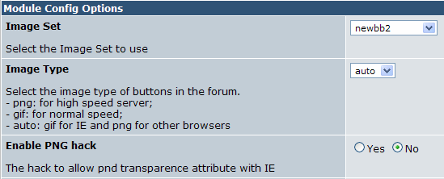
Activate the png hack and you can have the png transparency in the Internet Explorer browser.
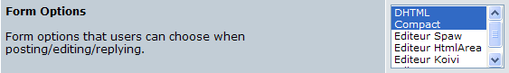
The authors of this new version sought to integrate other editors, in order to facilitate working of the published messages. If options DHTML and comptact are operational without any modifications the others require a particular installation.
link on the Koivi doc
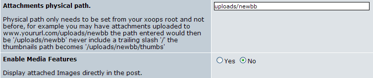
The possibility to attach files to a message is a revolution compared to the previous versions of this modules. Check that folder uploads/newbb is writable. The media functions permits to see the content of attached files directly in posts. The allowed mime types are defined in each forum.
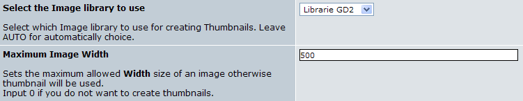
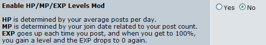
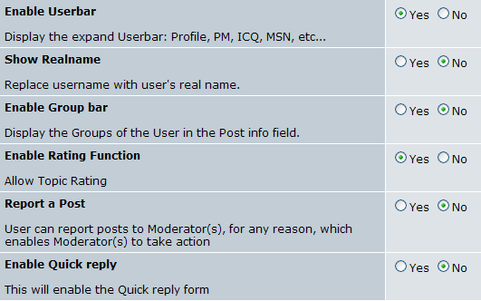
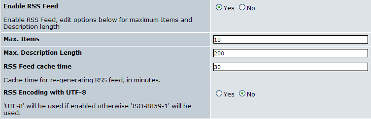
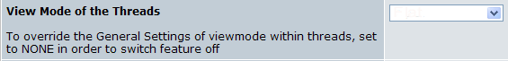
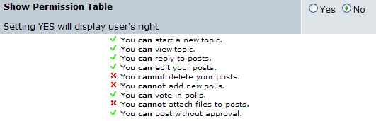
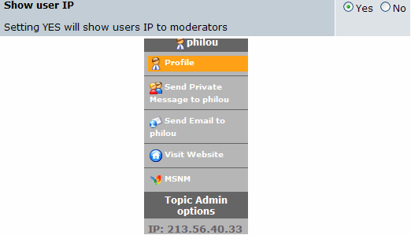
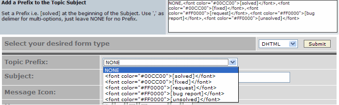
The authors of posts, if one gives them this possibility, can prefix their question with key words prepared by the administrators. You can see these options here with mentions NONE,[solved],[fixed],[request],[bug report],[non solved]. you can use it when you create you post. It's a usefull function to ensure quick answsers on forums. A post reported as [solved] is considered as closed and don't need new answser.
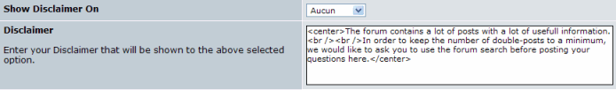
You can add a disclaimer in some situations : writing new message, an answer, each time this warning message will be posted in top of the concerned page.